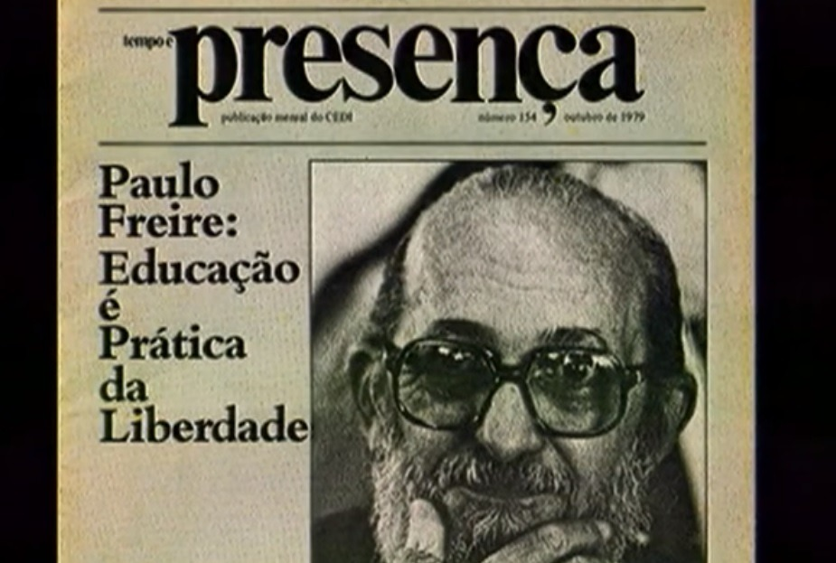

Maio é o mês em que as Escolas Técnicas Estaduais (Etecs) promovem uma programação especial em homenagem a Paulo Freire. Neste ano, por causa do isolamento social necessário para o enfrentamento da pandemia, as atividades ocorrem em ambientes virtuais, como redes sociais e Microsoft Teams. O educador e filósofo pernambucano, que morreu em 2 de maio de 1997, é um dos pensadores brasileiros mais citados do mundo em trabalhos acadêmicos. Ele deixou uma vasta obra sobre práticas pedagógicas e é conhecido por entender a educação como um instrumento de libertação das opressões. Nas Etecs, Paulo Freire será lembrado por meio de palestras, debates, vídeos e exposições. As atividades estão previstas na lei estadual nª 10.098, de 26 de novembro de 1998. Veja o cronograma das ações voltadas à comunidade escolar e, em várias unidades, também ao público externo. As Etecs aparecem por ordem alfabética de município:
Em 26 de novembro de 1998, a Lei n° 10.098 instituiu a "Semana Paulo Freire da Educação", no Estado de São Paulo. A cada ano, cresce o número de Escolas Técnicas Estaduais (Etecs) que incorporam em seu calendário a data. A proposta da iniciativa é oferecer uma série de atividades pedagógicas, artísticas e sociais, desenvolvidas por alunos e professores, para homenagear o educador pernambucano, patrono da Educação Brasileira. As diferentes opções de programação vão de palestras à exibição de vídeos que contam a história desse brasileiro, autor de obras como Pedagogia do Oprimido. Conheça o cronograma programação voltada à comunidade escolar e, em muitas unidades, também ao público externo para o mês de maio. As unidades aparecem em ordem alfabética de município:
Paulo Freire foi nomeado doutor honoris causa de 28 universidades de diversos países e teve suas obras traduzidas para mais de 20 idiomas. O educador, patrono da educação brasileira, também é o terceiro pensador mais citado do mundo em universidades da área de humanas. Sua mais famosa obra, Pedagogia do Oprimido, está entre os 100 livros mais pedidos em universidades de língua inglesa pelo mundo. Reunindo mais de 1 milhão de ementas de estudos universitários americanos, ingleses, australianos e neozelandeses, o livro de Freire foi o único brasileiro a entrar no top 100 da lista.
.webp)